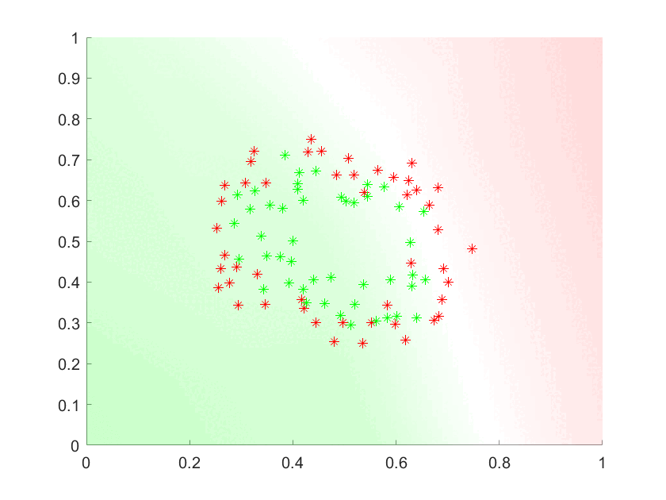
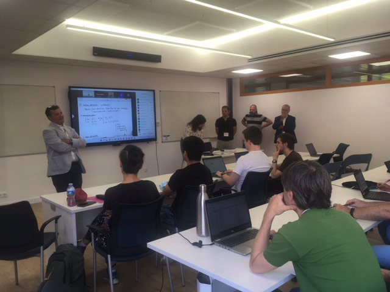
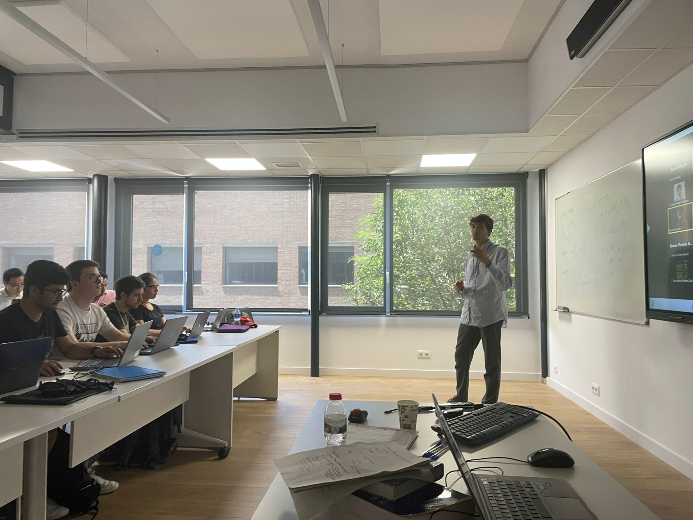
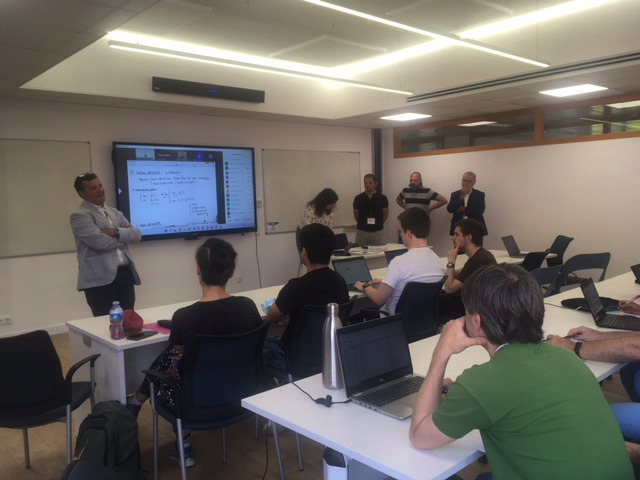
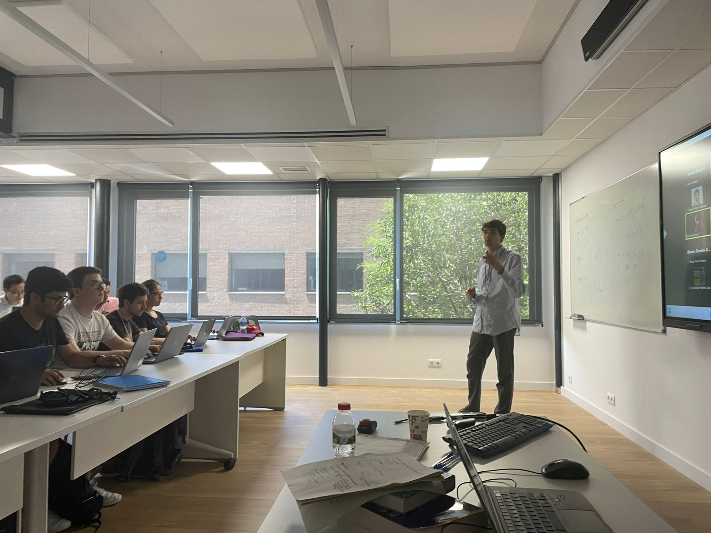

Machine Learning for Computational Engineering
Join us in this free course where the travellers will have a first glance at some basic aspects on machine learning. A basic introduction on optimization and statistics will fill the traveller backpack to better enjoy the machine learning journey. For a prompt integration of the concepts described, these will be presented in a Computational Engineering language. The practical sessions of the course will allow the travellers to become familiar with the basic machine learning culture.



 


